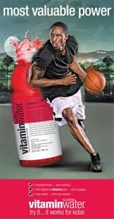
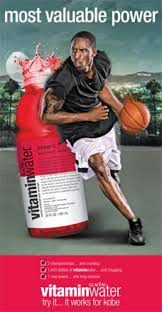

ETHOS
An Appeal to Credibility
Ethos is the persuasive technique that appeals to an audience by highlighting credibility. Ethos advertisement techniques invoke the superior “character” of a speaker, presenter, writer, or brand. Ethos examples aim to convince the audience that the advertiser is reliable and ethical. Learn More. Companies use celebrity "spokespersons" and/or someone the audience will relate to.

üîµ The Four Characteristics of Ethos:
Trustworthy
Relatable
authoritative
Reputable
üîµ Examples of Ethos in Advertising
 
